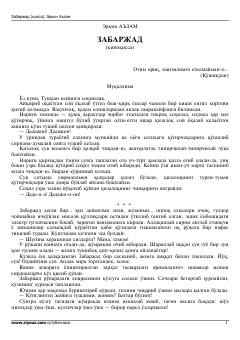

ZZabarjad ismli ayolning murakkab taqdiri va kechinmalariga bag'ishlangan ta'sirli qissa.
Taniqli yozuvchi Erkin Aʼzamning ushbu qissasida bosh qahramon Zabarjadning murakkab taqdiri, ichki kechinmalari va hayotiy izlanishlari tasvirlangan. Asar insoniy munosabatlar, yolg'izlik va hayot sinovlarini o'tkir psixologik tahlil orqali ochib beradi.